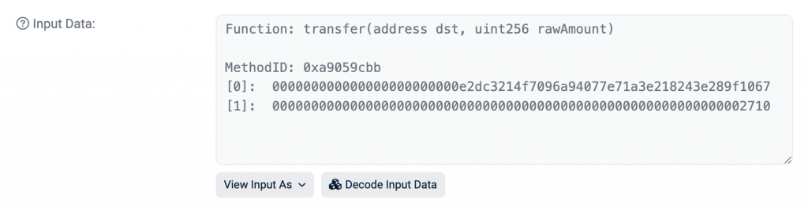
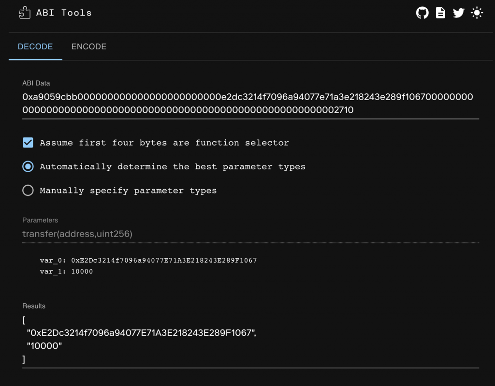
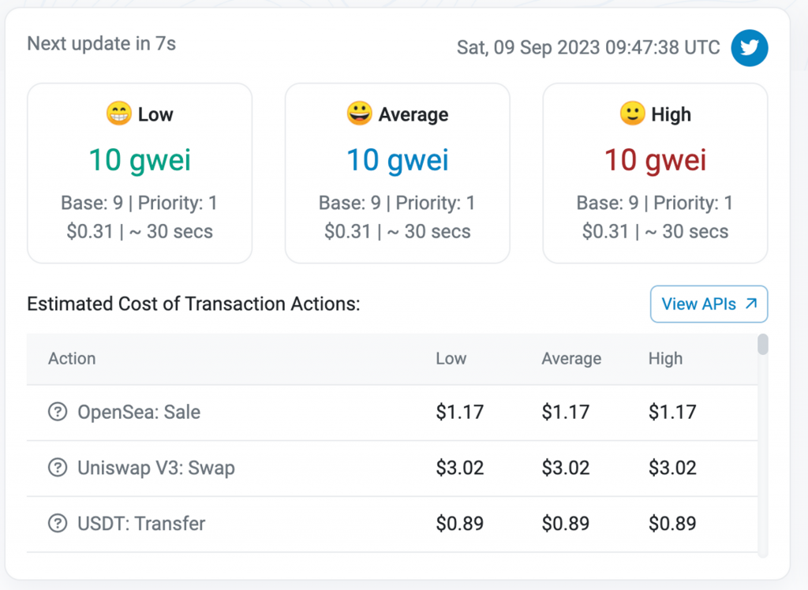
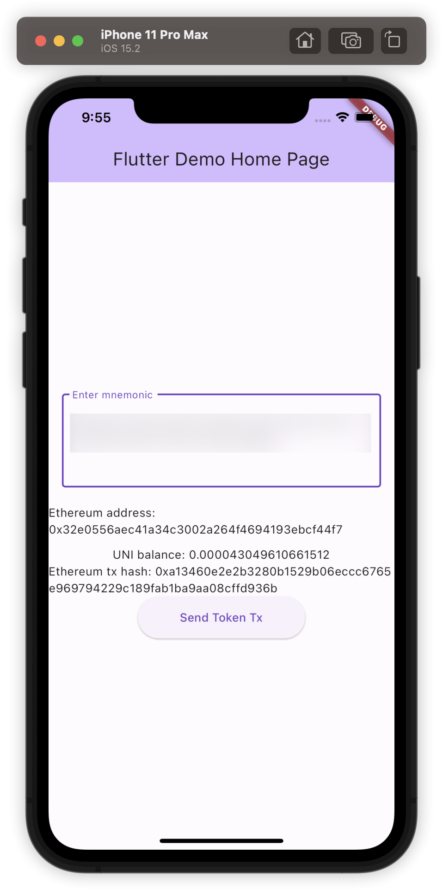
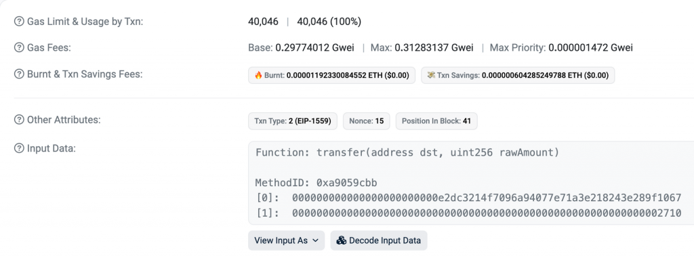
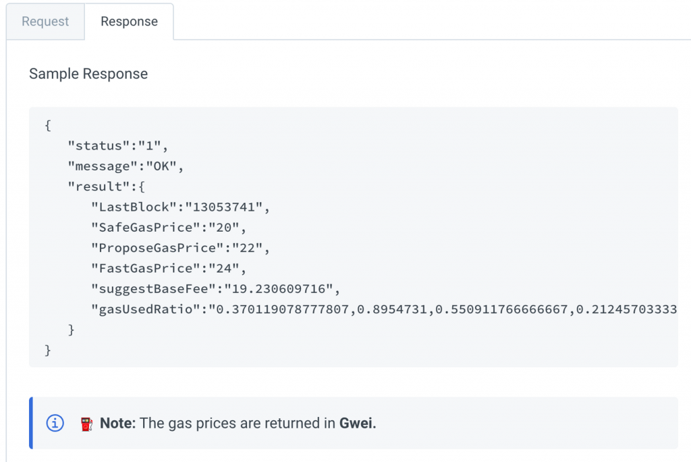

昨天我們完成了在 Flutter 中的多鏈錢包生成與交易簽名，今天會來實作 Ethereum 中的 ERC-20 Token Transfer 以及介紹交易中的 Call Data 是如何運作的，以及在進階的交易中會使用到的 Gas Fee 設定方式：EIP-1559。
在取得代幣餘額跟轉移代幣的操作，概念上跟 day 5 前端的實作很像。在前面的內容已經解釋過這兩個的概念，這段主要是讓讀者理解套件的應用方式，因此會直接給出程式碼。首先需要 ERC-20 的 ABI，以下只列出我們會用到的 function：
[code] const abi = [ { “inputs”: [ {“internalType”: “address”, “name”: “account”, “type”: “address”} ], “name”: “balanceOf”, “outputs”: [ {“internalType”: “uint256”, “name”: ““,”type”: “uint256”} ], “stateMutability”: “view”, “type”: “function” }, { “inputs”: [], “name”: “decimals”, “outputs”: [ {“internalType”: “uint8”, “name”: ““,”type”: “uint8”} ], “stateMutability”: “view”, “type”: “function” }, { “inputs”: [ {“internalType”: “address”, “name”: “recipient”, “type”: “address”}, {“internalType”: “uint256”, “name”: “amount”, “type”: “uint256”} ], “name”: “transfer”, “outputs”: [ {“internalType”: “bool”, “name”: ““,”type”: “bool”} ], “stateMutability”: “nonpayable”, “type”: “function” }, ];
[/code]
於是就可以使用 web3dart 提供的 DeployedContract 來呼叫
balanceOf 以及 decimals，並計算 raw token
balance 除以 10 的 decimals 次方後的結果：
[code] Future
[/code]
可以看到 DeployedContract 提供了取得單一 Contract
function 並呼叫他的方法，只要依序在 call 中帶入對應的
Contract function 跟參數的 array，就能簡單的呼叫任何智能合約的方法。
再來是 Send Token 的實作，可以使用
Transaction.callContract 搭配 parameters
來產生任何智能合約寫入的 Transaction，再搭配昨天實作的
signTransaction 及 sendRawTransaction 就能把
Send Token 的交易送出：
[code] Future
[/code]
送出交易後可以在鏈上看到已經確認的交易。那麼這個 Transfer Token 的交易是如何在區塊鏈上被表示的呢？這就要講到 Call Data 的概念。以我的交易為例，往下滑點擊 Show More 後可以看到 Input Data 這個區域：

這其實就是發出一個交易時的 data
欄位會帶入的值，也就是交易的 Call Data。如果點擊 View Input As 選擇
Original 的話，可以看到以下的內容：
[code] 0xa9059cbb000000000000000000000000e2dc3214f7096a94077e71a3e218243e289f10670000000000000000000000000000000000000000000000000000000000002710
[/code]
這個就是 Ethereum 的交易中帶入的 Call Data 最原始的樣子，它包含了這筆交易要呼叫智能合約上的哪個 function、用什麼參數呼叫的資訊。以這個例子來說他主要分成三部分：
[code] 0xa9059cbb -> Signature 000000000000000000000000e2dc3214f7096a94077e71a3e218243e289f1067 -> dst 0000000000000000000000000000000000000000000000000000000000002710 -> amount
[/code]
前 4 個 bytes 是 function signature，用來指定要呼叫哪個
function，而這是透過計算
keccak256(”transfer(address,uint256)”) 並取前 4 個 bytes
得到的，讀者可以到這個網站驗證計算結果。這個計算方式的好處是只要
function name 跟輸入參數的順序/型別有不一樣，就會算出不一樣的 function
signature，就可以用來區分一個智能合約中的不同
function（當然也有少部分情況會有 hash collision
的問題，解法涉及智能合約底層的機制，就不在這邊展開）。
再來 Call Data 中會依序 encode 每個參數的值，所以接下來的 32 bytes
就會對應到 transfer(address,uint256) function
中的第一個參數 dst，也就是 Token
要被轉到哪個地址上。在接下來的 32 bytes 就對應到第二個參數
rawAmount，也就是要轉多少 Token 出去。所以其實 web3dart 或
wagmi 這些 package 就是有幫開發者把比較 high level 的 function
呼叫方式轉換成智能合約看得懂的 Call Data，就不用自己寫 hex
字串的操作了。
另外也有一些線上工具可以方便的把 function name 加上參數 encode 成最終的 call data 結果，甚至也可以把 call data 做反向解析轉換出 function name 跟參數。由於 call data 中的前四個 bytes 是把 function signature hash 的結果，這種服務通常會維護一個常見的 function signature 以及前四個 bytes 之間的對應，這樣看到前 4 個 bytes 就能高機率的猜到他對應的 function signature 是什麼。相關的工具可以使用 Openchain 的 ABI Encode/Decode 工具，例如試著把上面的 Call Data 輸入進去他就能猜到是 transfer function 的 call data 並解析出對應的參數：

接下來要介紹進階的 Gas Fee 設定選項：EIP-1559。他的由來是因為過去以太坊網路的 Gas Fee 是比較難預估的，例如前一個 block 的 gas fee 如果是 50 gwei，下一個 block 可能變高到 80 gwei，但這樣按照上一個 block 的 gas fee 去估計交易要設定的 gas fee 時，可能會估出太低的 gas fee，導致這筆交易被卡在鏈上沒辦法成功被礦工打包（因為礦工一定都是從 gas fee 高的交易打包才有更高的利潤）。
因此在 2021 年的倫敦硬分叉（London Hard Fork），EIP-1559 這個升級提案正式被部署到以太坊主網，來解決以上 Gas Fee 的問題。他把原本交易中的 Gas Price 拆成以下兩個費用的總和：
因此當 Base Fee 的計算方式固定下來後，發送交易時就更能預測接下來的 Gas Fee 可能會如何變化，也提供更高的 Gas Fee 設定彈性。
另一個 EIP-1559 帶來的影響是：由於手續費中的 Base Fee 會被銷毀（或是說被「燒掉」），礦工只會拿到 Priority Fee 的部分，這讓 ETH 這個幣的總供應量有機會持續下降，因為當越多人在以太坊上發交易時，Base Fee 就會越高並促進更多的 ETH 被燒掉，就會產生通貨緊縮的效果。不過對礦工來說的收益就會降低，畢竟他們原本能拿到完整的 Gas Fee 但現在只能拿到 Priority Fee，因此當時也有部分礦工反對這個提議。
要查看當前 Ethereum 網路的 Base Fee 以及 Priority Fee，可以到 Etherscan 的 Gas Tracker 頁面：

Gas Tracker 會顯示快中慢三個選項的設定，因為如果想要越快讓交易確認，就需要付越高的 priority fee，所以一般錢包應用在發送交易時也會提供不同 Gas Fee 的選項讓使用者選擇。
進到 Flutter 中的實作，EIP-1559 所需的兩個參數就會對應到
Transaction.callContract 中的 maxFeePerGas 跟
maxPriorityFeePerGas，前者代表這筆交易使用的 Gas Fee
上限（也就是 base fee + priority fee），後者代表最多願意出多少 Priority
Fee。 Base Fee 的估計可以使用 web3dart 中已有的
getGasPrice() 來取得，但 maxPriorityFeePerGas
就沒有可以直接使用的 function，這是因為 web3dart 提供了比較
general 的面向 EVM 鏈都能使用的 Web3 Client，而並不是所有 EVM 鏈都支援
EIP-1559 的 Gas Fee 設定方式，因此沒有提供這個介面，需要我們自己打
Alchemy 的 eth_maxPriorityFeePerGas
API 來實作：
[code] Future
// get transaction
final transferTx = Transaction.callContract(
contract: contract,
function: transferFunction,
parameters: [EthereumAddress.fromHex(toAddress), amount],
maxFeePerGas: await web3Client.getGasPrice(),
maxPriorityFeePerGas: await getMaxPriorityFee(),
);[/code]
另外在簽名交易時，如果是 EIP-1559 的交易，還需要在簽出來的交易前面補上 0x02，代表是新版的交易（這是由 EIP-2718 定義的）
[code] Future
[/code]
其他的程式碼都沒變。讀者可能會注意到 callContract
其實還有一個參數是 gasPrice ，如果單獨使用
gasPrice 參數的話預設就會送出非 EIP-1559 (legacy type)
的交易，不過因為這個升級是向後相容的，所以 legacy
類型的交易也還是能正常送出。
基於昨天的產生錢包與地址的實作加上以上程式碼，就可以完成顯示 UNI Token Balance 以及發送 EIP-1559 的 Token Transfer 交易的簡單應用了！

成功發出後的 Transaction 在這裡，如果點 Show more 就可以看到這筆交易的確有指定到 EIP-1559 的 Max Fee 以及 Max Priority Fee

值得注意的是底下還有兩欄 Burnt Fee 跟 Txn Savings，前者指的是這筆交易燒掉了多少 ETH（也就是 ETH 的供應量減少），他的值會是 Base Fee 乘上 Gas Limit。至於 Transaction Savings 指的是 EIP-1559 這個交易類型為使用者省下了多少 Gas Fee，因為如果不指定 Max Priority Fee 只有指定 Max Fee（0.3128 Gwei），那礦工一定會想把 Max Fee 扣掉 Base Fee 的數量作為礦工獎勵取走，大約是 0.3128 - 0.2977 = 0.0151 Gwei。但因為我們指定了 Max Priority Fee = 1472 wei，所以礦工只能拿走 1472 wei（per gas），這樣就可以算出 EIP-1559 為我省下了 (0.3128 - 0.2977 - 0.000001472) * 40046 這麼多的 Gas Fee，也就剛好等於畫面上 Transaction Savings 的值。
今天我們介紹了如何在 Flutter 上對區塊鏈讀寫，以及講解 call data、EIP-1559 的機制，並把他應用在發送 Token Transfer 的交易，完整的程式碼在這裡。一般錢包 App 在發送交易時會提供快中慢的三個選項讓使用者選擇，這可以從 Etherscan 的 Gas Oracle API 拿到像這樣的資料，因篇幅關係就不在這裡實作。

另外如果想深入了解快中慢的 Gas Fee 是如何計算出來的，可以參考 Alchemy 關於 Gas Fee Estimator 的文章。這樣我們已經學會如何在 Flutter 中送出任意 EVM 的交易了，明天會來介紹一個有趣的 DApp 應用也就是 ENS (Ethereum Name Service)，來探索除了 Token Swap 之外區塊鏈上還能有怎樣的 DApp。